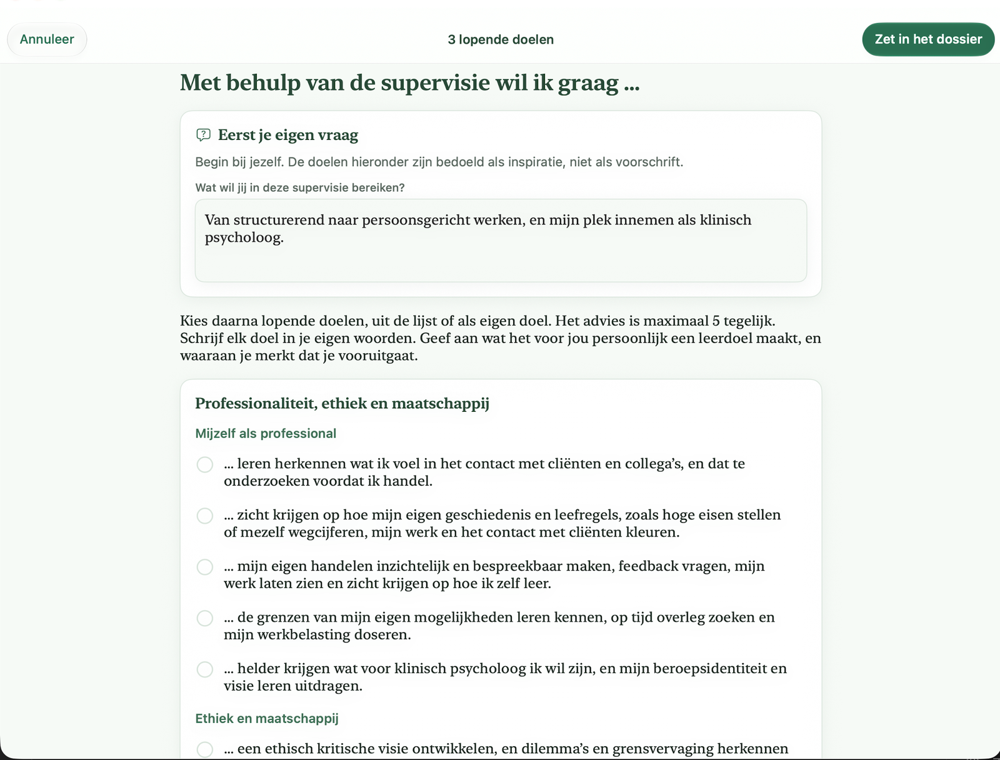
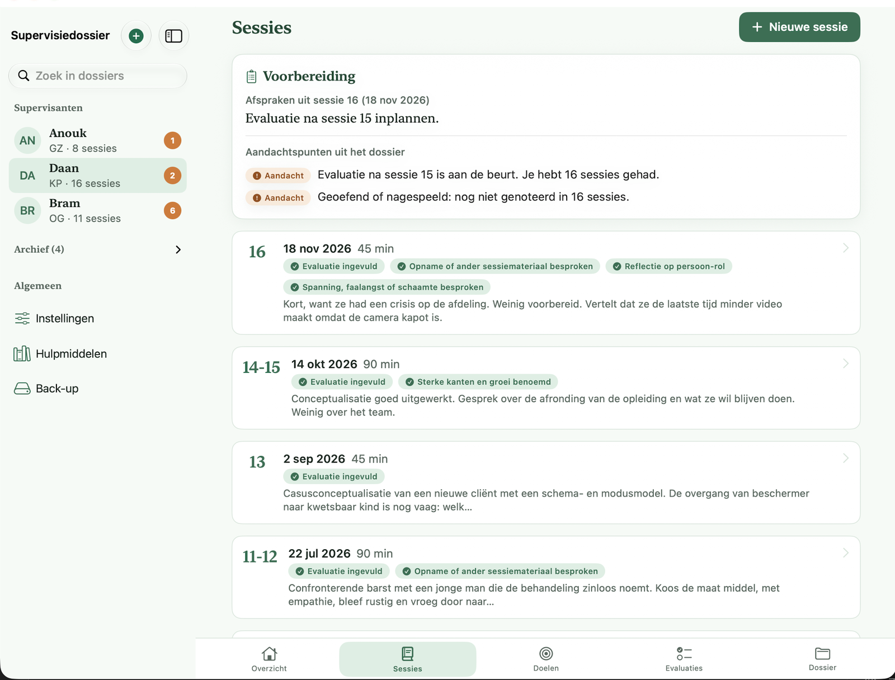
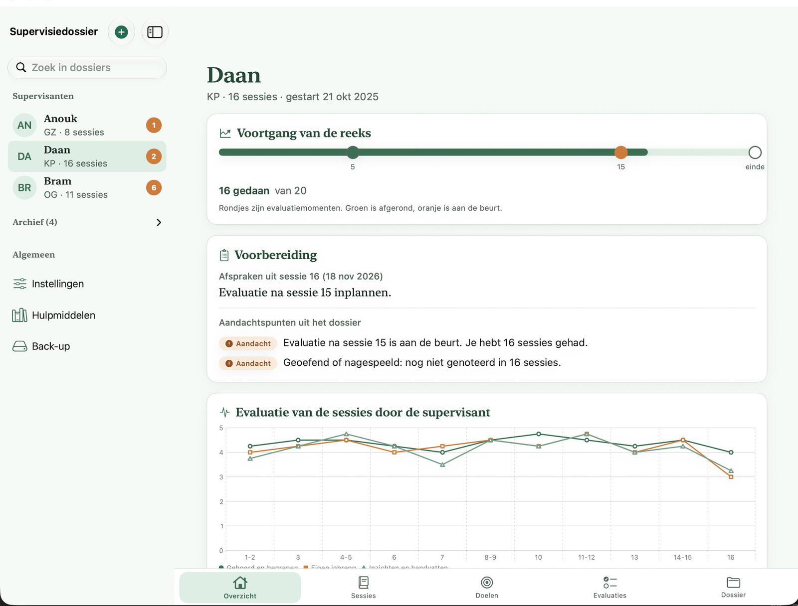

Wat er in supervisie gebeurt, verdient een plek.
Supervisiedossier houdt je supervisanten, sessies, leerdoelen en evaluaties bij elkaar. Voor iPhone, iPad en Mac. Alles blijft op je eigen apparaat.
Een dossier per supervisant
Als supervisor houd je veel vast. Leerdoelen, afspraken, evaluatiemomenten, wat er drie sessies geleden speelde. Supervisiedossier houdt het voor je bij. Je typt tijdens de sessie. Voor de volgende afspraak zie je in één oogopslag wat er is afgesproken en wat aandacht nodig heeft.
- Aantekeningen per sessie, met de doelen die aan bod kwamen
- Leerdoelen per supervisant, uit het competentieprofiel van de opleiding
- Vaste aandachtspunten met een herinnering
- Evaluatiemomenten en de sessie-evaluatie van je supervisant in beeld
- Contract, verklaring en evaluaties als PDF of Word
Hoe het werkt
Het ritme van supervisie, in drie stappen.
Voorbereiden
Open het dossier van je supervisant en zie waar je vorige keer bent gebleven: de afspraken, de lopende leerdoelen en de aandachtspunten die aan de beurt zijn. De supervisant formuleert de leerdoelen in eigen woorden. Jullie kiezen ze samen uit het competentieprofiel van de opleiding, het advies is maximaal vijf lopende doelen tegelijk.


Vastleggen
Tijdens of na de sessie noteer je kort wat er besproken is. Je vinkt aan welke doelen aan bod kwamen en welke vaste aandachtspunten je hebt besproken. Foto's en bestanden voeg je toe als bijlage, ook het reflectieverslag van de supervisant als Word, PDF of Pages.
Evalueren en terugkijken
Na elke sessie beantwoordt de supervisant drie stellingen met een schuifje. Jij ziet het verloop in een grafiek. Bij een evaluatiemoment beoordeel je de doelen en de competenties, en maak je er een document van dat je mailt of bewaart.

Een sessie in Supervisiedossier
Een kleine, werkende versie van de app, met verzonnen gegevens. Wat je hier invult, wordt nergens bewaard of verstuurd.
Wat het je oplevert
Minder om te onthouden
Afspraken en aandachtspunten komen vanzelf terug wanneer ze aan de beurt zijn.
Onderbouwde beoordelingen
Je oordeel rust op wat je over tijd hebt vastgelegd, niet op je geheugen.
Feedback van je supervisant
De korte sessie-evaluatie laat zien hoe de samenwerking ervaren wordt.
Alles blijft op je apparaat
Geen account, geen server, geen tracking, geen advertenties. Je supervisiegegevens verlaten je apparaat niet, tenzij je zelf iets deelt of mailt. Lees het privacybeleid.
Samen met Mijn Supervisie
Elke app werkt los van de andere. Heeft je supervisant de app Mijn Supervisie, dan kun je een uitnodiging sturen. Het traject staat dan klaar met jouw gegevens, het profiel en de evaluatiemomenten, en de supervisant kan sessie-evaluaties en reflectieverslagen terugsturen. Dat gaat via een bestand dat jullie zelf delen, niet via een server.
Naar Mijn Supervisie"Ik wilde dat supervisie minder over formulieren zou gaan, en meer over het vak."
Gemaakt door een supervisor, voor supervisoren.